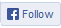

Документация Связь с авторами
veracrypt-contact [собачка] lists [точка] sourceforge [точка] net
veracrypt [собачка] idrix [точка] fr
Кроме того, мы есть в соцсетях: 
erodim [собачка] mail [точка] ru